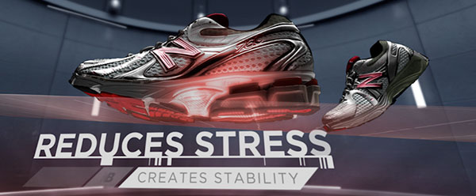
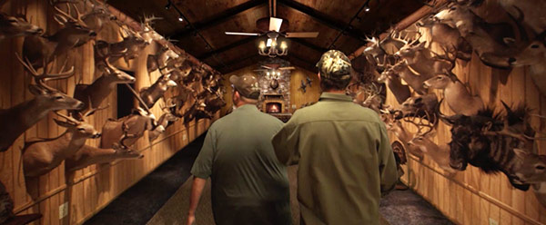

<!doctype html>
<html>
<head>
  <meta charset="utf-8">
  <meta http-equiv="X-UA-Compatible" content="IE=edge,chrome=">
  <title></title>
  <style>
body {
  font-family: 'Ubuntu Mono' arial, sans-serif;
  background: #d1d1de;
  text-align: center;
  color: white;
}
.page-wrap {
  margin: 0 auto;
  width: 600px;
  max-width: 100%;
  padding-top: 25px;
}

.toggle-function {
  text-align: center;
  width: 100%;
  display: block;
  margin: 10px 0 25px 0;
}
  
.btn {
  display: inline-block;
  padding: .5em;
  text-align: center;
  border: 2px solid white;
  cursor: pointer;
  background-color: white;
  color: #d1d1de;
}
.btn:nth-child(2) {
  border-left: none;
}
.btn:nth-child(1) {
  background-color: transparent;
  color: white;
}
.stay .btn {
  background-color: #d1d1de;
  color: white;
}
.stay .btn:nth-child(1) {
  background-color: white;
  color: #d1d1de;
}

.vfx-image-wrap {
  position: relative;
  display: inline-block;
  margin: 0 auto;
  width: 600px;
  min-height: 273px;
  margin-bottom: 40px;
  cursor:ew-resize;
}

.before-image {
  position: absolute;
  top: 0;
  left: 0;
  z-index: 1;
  width: 50%;
  overflow: hidden;
}

.after-image {
  position: absolute;
  top: 0;
  left: 0;
  z-index: 0;
}

.divider-bar {
  position: absolute;
  width: 2px;
  left: 50%;
  top: -10px;
  bottom: -15px;
  background: white;
  height:100%;
  display: block;
  z-index: 2;
  box-shadow: 0 0 10px 1px rgba(0, 0, 0, 0.4);
}
</style>
</head>
<body>
   <div class="page-wrap">
    <div class="vfx-image-wrap">
      <div class="before-image">
        
      </div>
      <div class="after-image">
        
      </div>
      <div class="divider-bar"></div>
    </div>
    <!-- <div class="vfx-image-wrap">
      <div class="before-image">
        
      </div>
      <div class="after-image">
        
      </div>
      <div class="divider-bar"></div>
    </div>

     <div class="vfx-image-wrap">
      <div class="before-image">
        
      </div>
      <div class="after-image">
        
      </div>
      <div class="divider-bar"></div>
    </div> -->

</div>
</body>
<script src="http://code.jquery.com/jquery-2.0.0.min.js"></script>
<script>
// window.onload=function(){
//    var imageWrap=document.querySelector(".vfx-image-wrap"),
//        topImage=document.querySelector(".before-image"),
//        divider=document.querySelector(".divider-bar"),
//        stayBounce=document.querySelector(".toggle-function");
//        imageWrap.addEventListener("mousemove",function(e){
//         var left=this.offsetLeft,
//             fullWidth=this.offsetWidth,
//             mouseX=e.pageX-left,
//             topImage=this.children[0],
//             divider=this.lastElementChild;
//             // console.log(divider);
//             mouseX>0?mouseX:0;
//     mouseX>fullWidth?fullWidth:mouseX;
//     this.classList.add("special");
//     divider.style.cssText+="left: "+mouseX+"; transition: none;";
//     topImage.style.cssText+="width: "+mouseX+"; transition: none;";
//        },false);

// stayBounce.addEventListener("click",function(){
//     $(this).classList.toggle('stay');
//   },false);
// imageWrap.addEventListener("mouseleave", function () {
//     if (!stayBounce.classList.has('stay')) {
//       divider.style.cssText+="left: 50%; transition: all 3s;";
//       topImage.style.cssText+= "width: 50%;transition: all .3s;";
//     }
//   },false);
// }; 
     $(function () {
    var imageWrap = $('.vfx-image-wrap'),
        topImage = $(this).find('.before-image'),
        divider = $(this).find('.divider-bar'),
        stayBounce = $('.toggle-function');
     console.log(stayBounce);
    imageWrap.on("mousemove", function (e) {
      // Gotta localize top image and divider so it only applies to this
        var offsets = $(this).offset(),
            fullWidth = $(this).width(),
            mouseX = e.pageX - offsets.left,
            topImage = $(this).find('.before-image'),
            divider = $(this).find('.divider-bar');
     console.log(e.pageX, offsets.left,mouseX);

        if (mouseX < 0) {
            mouseX = 0;
        } else if (mouseX > fullWidth) {
            mouseX = fullWidth
        }
      // $(this).addClass('special');
        divider.css({ left: mouseX, transition: 'none' });
        topImage.css({ width: mouseX, transition: 'none' });

    });
  stayBounce.click(function(){
    $(this).toggleClass('stay');
  });

  imageWrap.on("mouseleave", function () {
    if (!stayBounce.hasClass('stay')) {
      divider.css({  left: '50%', transition: 'all .3s' });
      topImage.css({  width: '50%', transition: 'all .3s' });
    }
  });
}); 
</script>
</html>
